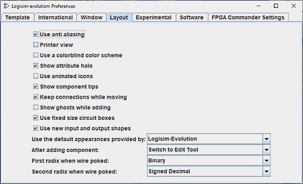
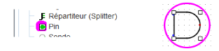
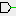
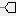
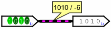

布局选项卡

此选项卡包含影响电路布局编辑器行为的首选项。
-
使用抗锯齿： 启用抗锯齿渲染。导线在屏幕或打印输出上会显得更平滑。
- 使用色盲配色方案 调整导线颜色，使其更便于色觉障碍人士辨认。
-
显示属性光晕： 指定是否围绕当前属性表所显示的组件或工具绘制淡青色椭圆。

- 使用动画图标
-
显示组件提示： 指定当鼠标悬停在支持提示的组件上时，是否显示临时出现的“工具提示”。例如，悬停在子电路组件的引脚上会显示子电路内对应引脚的标签；悬停在分线器某一端会显示该端对应的位。此外，多路选择器、算术和存储器库中的所有组件都会通过提示提供输入和输出信息。
-
移动时保持连接： 指示 Logisim 在移动组件时是否添加新导线以保持其连接。默认情况下此选项开启——但可以在移动组件时按住 Shift 键临时关闭。如果取消选中此框，则默认在移动时不添加导线——但可以在移动过程中按住 Shift 键临时开启。
-
添加时显示虚影： 选中后，当选中用于添加新组件的工具时，鼠标在画布上移动时会绘制待添加组件的浅灰色轮廓。例如，如果选择与门工具并将鼠标移入窗口（不按下鼠标按钮），则会在鼠标单击后与门将出现的位置显示灰色轮廓。
- 使用固定大小电路框： 新建 Logisim-evolution 项目中的子电路默认使用标准尺寸外观；如果标准尺寸不适合电路，也可以在子电路属性中逐个设置 使用固定框大小。
-
使用新的输入/输出符号： 选中该框时，将使用新的输入/输出符号


；否则将使用经典 Logisim 输入/输出符号 。系统会弹出窗口，询问是否要转换当前电路图中的符号。 - 默认外观来源： 某些电路（例如存储器）的外观可按不同 Logisim 版本提供：经典 Logisim、Logisim-HolyCross、Logisim-Evolution。
-
添加组件后： 默认情况下，添加每个单独组件后，Logisim 会切换回选择工具，以便移动组件和添加导线。下拉框可以更改此行为，使 Logisim 保持在同一工具以添加更多相同组件，直到您自己选择选择工具。（这是 Logisim 2.3.0 之前的默认行为。虽然更直观，但此行为需要更多鼠标移动来切换工具。）
-
点按连线时的第一进制： 配置使用手形工具点按导线时数值的显示方式。点按导线会临时显示该值，直到用户点击电路中的其他位置。

-
点按连线时的第二进制： 配置导线值显示方式的第二部分。